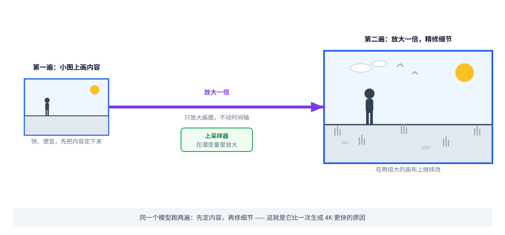
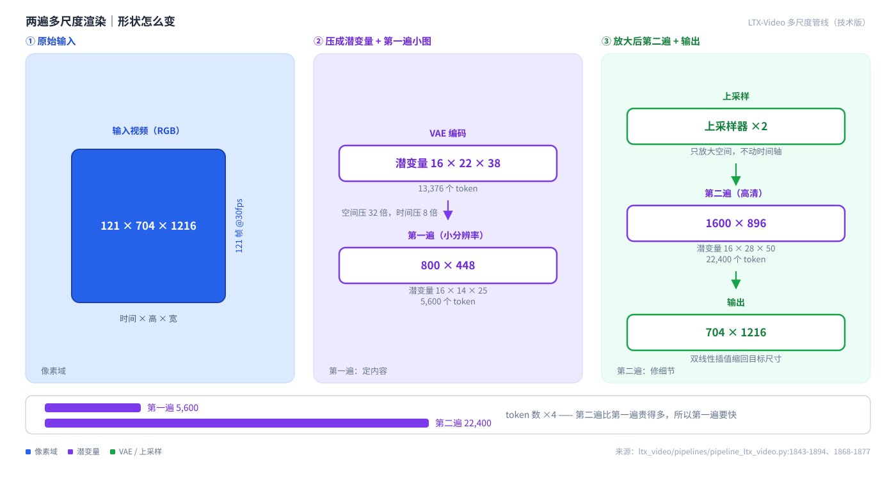
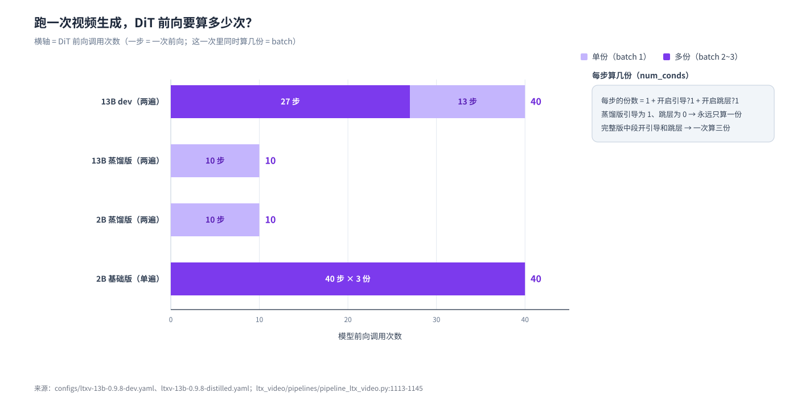
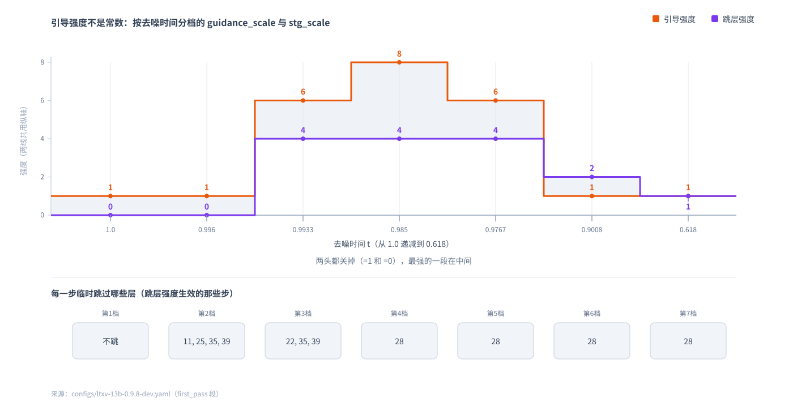

LTX-Video 完全拆解
LTX-Video (v0.9.x) 完全拆解：一个已经"退休"的 DiT 视频生成代码库，值不值得读
调研对象：
https://github.com/Lightricks/LTX-Video（本地 checkout：ltx-video/） 调研方式：离线，全部结论来自仓库文件内容与git命令输出。撰写日期：2026-11-08（Asia/Shanghai）。 引用约定：文件路径:行号。仓库没写的，标注 「仓库未说明」；外部假设一律标 【推导】。

图 1｜LTX-Video 的多尺度流水线 —— 看这里：同一个模型跑两遍。第一遍在小图上把内容画出来（快、便宜），第二遍在放大一倍的画布上精修，最后缩回目标尺寸。这就是它比"一次生成 4K"快得多的原因。
结论 / Conclusion
这个仓库是 LTX 视频模型的 v0.9.x 一代代码，2026 年 8 月已被 LTX-2.5 取代，README 自己写着"This repository is no longer under active development"（不再积极开发）。 但它是读 DiT 视频生成代码的好教材：35 个 Python 文件、9,716 行，结构干净，没有训练代码缠在里面。
三个最值得记住的点：一，它默认用两遍多尺度渲染——小图定内容、大图修细节，再插值回目标尺寸；二，它的 CFG 不是常数，而是一条按时间分档的曲线（13B dev 配置里是 [1, 1, 6, 8, 6, 1, 1]——后期步骤干脆把引导关掉）；三，它默认跑起来是会报错的——--pipeline_config 的默认值指向仓库里根本不存在的 configs/ltxv-13b-0.9.7-dev.yaml。
技术版 / Technical
- 身份：
main分支，HEAD50f0aef1297574a4b29acbdb874e3a363a6d5f2e（2026-11-02），Apache-2.0，历史只有 1 个 commit（压平 clone）。 - 规模（实测）：79 个 tracked 文件 = 35 个
.py（9,716 行） + 13 个 YAML（302 行）+ 1 个 README（408 行）+ 25 个媒体文件（全部是 132 字节的 Git LFS 指针，真实二进制不在仓库里）。 - 2B 主干（
diffusers_config_mapping.py:74-105）：28 层、32 头、head_dim 64 → D = 2048，cross_attention_dim2048，caption_channels4096，latent 通道 128。 - 2B 参数量【推导】 = 2,397,046,912（2.40 B）；单块 =
20·D² + 27·D= 83,941,376（自注意力 16,789,504 + 交叉注意力 16,789,504 + FFN 50,350,080 + scale_shift_table 12,288），×28 = 2.35B。名字里的 "2B" 名副其实。 - 13B 的层数/头数/宽度在本仓库内不可解——它们存在 checkpoint 的 safetensors metadata 里（
transformer3d.py:274-326）。唯一能证明的下界是 L ≥ 43（来自skip_block_list的索引 42）。 - VAE【推导】 ≈ 419,194,418（encoder 180,404,353 + decoder 238,623,356）；LatentUpsampler ≈ 48,393,856。VAE 压缩：空间 32×、时间 8×，latent 通道 128。
- 默认输出：704 × 1216 × 121 帧 @ 30fps ≈ 4.03 秒 → latent
(1,128,16,22,38)→ 13,376 个 token。 - 两遍尺寸：第一遍 800×448（5,600 token）→ 空间上采样 ×2 → 第二遍 1600×896（22,400 token）→ 双线性插值回 704×1216。
- DiT 调用次数：13B dev 27 + 13 = 40（每步 batch 1/2/3）；13B distilled 7 + 3 = 10（batch 恒为 1）；2B base 40 步 × batch 3。
- 文本编码器 T5-XXL（
PixArt-alpha/PixArt-XL-2-1024-MS），256 token，caption 4096→2048，bf16 约 7 GiB——是单笔最大的显存占用项（且是冻结的）。
一、仓库地图
傻瓜层： 代码分三块：models/ 是网络（DiT + 视频 VAE），pipelines/ 是把网络串起来的流程，schedulers/ 是噪声调度。configs/ 里 13 个 YAML 就是 13 种"配方"。
技术版 / Technical
顶层：
| 路径 | 作用 |
|---|---|
inference.py |
顶层入口（薄封装）：解析参数 → 加载 pipeline → 跑 → 存 PNG/MP4 |
ltx_video/inference.py |
真正的实现（635 行）：InferenceConfig、infer()、create_ltx_video_pipeline() |
README.md |
408 行：模型表、快速开始、参数指南、ComfyUI/Diffusers 集成、News 时间线 |
pyproject.toml |
依赖；torch>=2.1.0 |
configs/ |
13 个 YAML（302 行），见下文全表 |
docs/ |
23 个文件，全部是 LFS 指针（未读内容） |
tests/ |
5 个 pytest 文件（config / inference / scheduler / vae）+ conftest.py |
ltx_video/ 核心包：
| 路径 | 作用 |
|---|---|
models/transformers/transformer3d.py（507 行） |
Transformer3DModel：DiT 主干、AdaLN、RoPE、patchify、skip-layer mask |
models/transformers/attention.py（1,264 行） |
BasicTransformerBlock、Attention、自注意力/交叉注意力、RoPE 施加 |
models/transformers/embeddings.py |
PixArtAlphaTextProjection（caption 4096→2048） |
models/transformers/symmetric_patchifier.py |
对称 patchify/unpatchify（patch_size=1） |
models/autoencoders/causal_video_autoencoder.py（1,398 行） |
因果视频 VAE（encoder/decoder、3D 卷积、时序因果性） |
models/autoencoders/video_autoencoder.py（1,045 行） |
另一套 VAE 实现 |
models/autoencoders/latent_upsampler.py |
LatentUpsampler：latent 空间空间 ×2（PixelShuffleND(2)） |
models/autoencoders/vae.py / vae_encode.py / causal_conv3d.py / dual_conv3d.py / pixel_shuffle.py / pixel_norm.py |
VAE 的零件 |
pipelines/pipeline_ltx_video.py |
LTXVideoPipeline（base）与 LTXMultiScalePipeline（两遍） |
pipelines/crf_compressor.py |
H.264 CRF 压缩/解压（输入视频的中间格式） |
schedulers/rf.py |
RectifiedFlowScheduler：Rectified Flow 调度器、SD3 式分辨率相关 shift |
utils/diffusers_config_mapping.py |
关键文件：diffusers 格式的 VAE/transformer/scheduler 配置 → 本仓库配置 |
utils/skip_layer_strategy.py |
STG 的四种跳过策略：attention_values / attention_skip / residual / transformer_block |
utils/prompt_enhance_utils.py |
Florence-2 + Llama-3.2-3B 的提示词扩写 |
utils/torch_utils.py |
随机种子等 |
二、模型变体：13 个 YAML = 13 种配方
傻瓜层： 同一个网络，配方不同：有的走"一次画完"，有的走"两遍"；有的是完整版（要开引导），有的是蒸馏版（少画几步）。
技术版 / Technical
被 configs/*.yaml 引用、可直接跑起来的权重（12 个）：
| 权重 | config | pipeline | 说明 |
|---|---|---|---|
ltx-video-2b-v0.9.safetensors |
ltxv-2b-0.9.yaml |
base | 首发版 |
ltx-video-2b-v0.9.1.safetensors |
ltxv-2b-0.9.1.yaml |
base | 加 STG/PAG、diffusers 格式、CPU offload |
ltx-video-2b-v0.9.5.safetensors |
ltxv-2b-0.9.5.yaml |
base | 关键帧/续写、更高分辨率、改进 VAE |
ltxv-2b-0.9.6-dev-04-25.safetensors |
ltxv-2b-0.9.6-dev.yaml |
base | 新默认 1216×704@30fps |
ltxv-2b-0.9.6-distilled-04-25.safetensors |
ltxv-2b-0.9.6-distilled.yaml |
base | 蒸馏版：8 步、无 CFG/STG、stochastic_sampling=true |
ltxv-2b-0.9.8-distilled.safetensors |
ltxv-2b-0.9.8-distilled.yaml |
multi-scale | 蒸馏 + 多尺度 |
ltxv-2b-0.9.8-distilled-fp8.safetensors |
ltxv-2b-0.9.8-distilled-fp8.yaml |
multi-scale | FP8 |
ltxv-13b-0.9.8-dev.safetensors |
ltxv-13b-0.9.8-dev.yaml |
multi-scale | 最高质量；README 称可生成 60 秒 |
ltxv-13b-0.9.8-dev-fp8.safetensors |
ltxv-13b-0.9.8-dev-fp8.yaml |
multi-scale | FP8 |
ltxv-13b-0.9.8-distilled.safetensors |
ltxv-13b-0.9.8-distilled.yaml |
multi-scale | 蒸馏；含 tone_map_compression_ratio: 0.6 |
ltxv-13b-0.9.8-distilled-fp8.safetensors |
ltxv-13b-0.9.8-distilled-fp8.yaml |
multi-scale | FP8 |
ltxv-spatial-upscaler-0.9.8.safetensors |
全部 6 个 multi-scale config | — | 空间上采样器，multi-scale 必需 |
README 提到、但仓库内没有任何代码路径的（只能去 ComfyUI / diffusers 用）：ltxv-13b-0.9.7-* 全系、ltxv-13b-0.9.7-distilled-lora128（"只要 1GB 显存"）、ltxv-temporal-upscaler-0.9.7（时间上采样器——本仓库只做空间上采样）、ltxv-13b-0.9.8-mix（README 的 inference.py config 一栏写 N/A）、以及 4 个 IC-LoRA（detailer / depth / pose / canny）。
每个变体改变了什么：
| 变体 | 改变的东西 |
|---|---|
| dev（非蒸馏） | 需要 CFG（guidance_scale 6/8/6）+ STG（4/4/4/2/1）+ CFG*；30 步 × 2 遍 |
| distilled | 不需要 CFG/STG（gs=1, stg=0），固定 7+3 个 timestep；13B distilled 另加 tone_map_compression_ratio: 0.6 |
| fp8 | 只改 precision: float8_e4m3fn，其余与同名非 fp8 配置逐字相同；依赖外部包 q8_kernels（LTXVideo-Q8-Kernels），未装则直接 raise ValueError("Q8-Kernels not found...")（ltx_video/inference.py:185-200） |
| spatial upscaler | LatentUpsampler：latent 空间 ×2（PixelShuffleND(2)），48.4M 参数 |
完整配置表（13 个 YAML 的关键项）：
| 键 | 13B dev（0.9.8） | 13B distilled | 2B distilled（0.9.8） | 说明 |
|---|---|---|---|---|
pipeline_type |
multi-scale |
multi-scale |
multi-scale |
base 流水线则不需要 upscaler |
checkpoint_path |
ltxv-13b-0.9.8-dev.safetensors |
…-distilled… |
ltxv-2b-0.9.8-distilled… |
|
downscale_factor |
0.6666666 |
同 | 同 | 第一遍的缩小比例 |
spatial_upscaler_model_path |
ltxv-spatial-upscaler-0.9.8.safetensors |
同 | 同 | |
stg_mode |
attention_values |
同 | 同 | 另有 attention_skip / residual / transformer_block |
decode_timestep |
0.05 |
同 | 同 | 仅当 VAE 有 timestep_conditioning 才生效（见坑） |
decode_noise_scale |
0.025 |
同 | 同 | |
text_encoder_model_name_or_path |
PixArt-alpha/PixArt-XL-2-1024-MS |
同 | 同 | T5-XXL |
precision |
bfloat16 |
同 | 同 | 或 float8_e4m3fn |
sampler |
from_checkpoint |
同 | 同 | 另有 uniform / linear-quadratic |
stochastic_sampling |
false |
同 | 同 | 2B 0.9.6 distilled 是 true |
prompt_enhancer_image_caption_model_name_or_path |
MiaoshouAI/Florence-2-large-PromptGen-v2.0 |
同 | 同 | |
prompt_enhancer_llm_model_name_or_path |
unsloth/Llama-3.2-3B-Instruct |
同 | 同 | |
first_pass.num_inference_steps |
30（skip_final_inference_steps: 3） |
固定 timestep 表 7 个 | 固定 7 个 | |
first_pass.guidance_scale |
[1, 1, 6, 8, 6, 1, 1] |
1 |
1 |
7 档时间分桶 |
first_pass.stg_scale |
[0, 0, 4, 4, 4, 2, 1] |
0 |
0 |
|
first_pass.rescaling_scale |
[1, 1, 0.5, 0.5, 1, 1, 1] |
1 |
1 |
CFG* 重缩放 |
first_pass.guidance_timesteps |
[1.0, 0.996, 0.9933, 0.9850, 0.9767, 0.9008, 0.6180] |
— | — | 每档的时间点 |
first_pass.skip_block_list |
[[], [11,25,35,39], [22,35,39], [28], [28], [28], [28]] |
[42] |
[42] |
每一步要跳过的 block（STG） |
first_pass.cfg_star_rescale |
true |
— | — | |
second_pass.num_inference_steps |
30（skip_initial_inference_steps: 17） |
3 个 | 3 个 | |
second_pass.guidance_scale |
[1] |
[1] |
[1] |
第二遍不开 CFG |
second_pass.skip_block_list |
[27] |
[42] |
[42] |
三、架构：DiT 主干
傻瓜层： 每个 block 做三件事：先自己看自己、再听文本、最后过一遍前馈；时间和文本以"六个旋钮"的形式插进来。
技术版 / Technical
符号表：
| 符号 | 含义 | 取值 |
|---|---|---|
F_l |
latent 帧数 | num_frames // 8 + 1（因果 VAE 多 1 帧） |
H_l, W_l |
latent 高宽 | H // 32, W // 32 |
C |
latent 通道 | 128 |
p |
DiT patch size | 1（SymmetricPatchifier(patch_size=1)，patchify 是纯 reshape） |
D |
hidden dim | num_attention_heads × attention_head_dim；2B = 32×64 = 2048 |
L |
block 数 | 2B = 28；13B ≥ 43 |
S |
文本 token 数 | 256 |
C_txt |
文本嵌入维度 | 4096（T5-XXL 的 d_model） |
执行顺序（Transformer3DModel.forward，transformer3d.py:330-507）：
1. hidden_states = patchify_proj(hidden_states) # Linear(128 → D) :416
2. timestep *= timestep_scale_multiplier (1000) :418-419
3. freqs_cis = precompute_freqs_cis(indices_grid) # RoPE cos/sin :421
4. timestep, embedded_timestep = adaln_single(timestep, {...}) :424-434
5. encoder_hidden_states = caption_projection(encoder_hidden_states) :437-442
6. for block in transformer_blocks: hidden_states = block(...) :444-493
7. shift, scale = scale_shift_table + embedded_timestep :496-500
8. hidden_states = norm_out(hidden_states) * (1 + scale) + shift :502
9. hidden_states = proj_out(hidden_states) # Linear(D → 128) :503
Block 内部（BasicTransformerBlock.forward，attention.py:198-322）——标准的 AdaLN-Zero：
a. norm1(hidden_states) # RMSNorm（无仿射参数） :227
b. shift_msa, scale_msa, gate_msa, shift_mlp, scale_mlp, gate_mlp = ... :231-238
norm_hidden_states = norm * (1 + scale_msa) + shift_msa :239
c. attn_output = attn1(norm, freqs_cis, ...) # 自注意力 + RoPE :264-272
d. attn_output = gate_msa * attn_output :273-274
e. hidden_states = attn_output + hidden_states :275
f. attn_output = attn2(hidden_states, encoder_hidden_states=...) # 交叉注意力 :284-291
hidden_states = attn_output + hidden_states :292
g. norm2 → norm * (1 + scale_mlp) + shift_mlp :295-296
h. ff_output = ff(norm) # FeedForward，gelu-approximate :303-311
i. ff_output = gate_mlp * ff_output; hidden_states = ff_output + hidden :312-314
注意：block 里没有 norm3，只有
norm1（自注意力前）与norm2（FF 前）两次归一化；6 组调制向量由adaln_single一次性算出。
单块参数（2B，D=2048）：
| 子模块 | 类型 | 参数量 |
|---|---|---|
norm1 |
RMSNorm(D)，elementwise_affine=False |
0 |
attn1 |
自注意力（q/k/v/o 各 Linear(2048,2048) + q_norm/k_norm RMSNorm） | 16,789,504 |
attn2 |
交叉注意力（K/V 输入是 cross_attention_dim=2048 的文本特征） |
16,789,504 |
norm2 |
RMSNorm(D)，无仿射 |
0 |
ff |
FeedForward，inner_dim = 4×2048 = 8192 |
50,350,080 |
scale_shift_table |
randn(6, D)/D**0.5 |
12,288 |
| 单块合计 | 83,941,376 |
位置编码：RoPE（不是 sin-cos）（transformer3d.py:204-257）：
rope_theta = 10000，positional_embedding_max_pos = [20, 2048, 2048]（时间/高/宽）precompute_freqs_cis→ 复数频率(B, N, 1023)→ cos/sin(B, N, 2048)- 只作用于自注意力，交叉注意力不加位置编码
get_fractional_positions把整数网格变成带小数的连续位置
时间步条件（AdaLN）：
adaln_single.linear = Linear(inner_dim, 4 * inner_dim)→ 配合scale_shift_table得到 6 组（shift/scale/gate × msa/mlp）timestep_scale_multiplier = 1000（所以 t 是 0~1 之间的比例，乘 1000 后进 sinusoidal embedding）scale_shift_table = nn.Parameter(randn(6, inner_dim) / inner_dim**0.5)
文本条件：caption_projection = PixArtAlphaTextProjection（4096 → 2048）；交叉注意力的 K/V 来自文本、Q 来自视频 token。
视频 VAE（causal_video_autoencoder.py:208-241）：空间 32×、时间 8×，latent 通道 128；因果卷积（CausalConv3d 时间维只左 padding）→ 帧数关系是 1 + 8×(F_l − 1)，首帧只占 1 个像素帧。
噪声调度器（schedulers/rf.py）：RectifiedFlowScheduler，order=1，init_noise_sigma=1.0，scale_model_input 是恒等。
- 三种采样表：
Uniform（linspace）、LinearQuadratic、Constant（需给 shift）；所有 config 都用from_checkpoint - SD3 式分辨率相关 shift：
get_normal_shift(m)（m = prod(latent_shape[2:])，即 latent 体积的立方近似）在min_shift=0.95 / max_shift=2.05 / min_tokens=1024 / max_tokens=4096上线性插值，再用strech_shifts_to_terminal(shifts, terminal=0.1)把末端拉到 0.1 step()：确定性时prev = sample - dt * model_output；stochastic_sampling=True时先估 x0 再add_noise（alphas = 1 - sigmas）
LoRA：仓库没有加载 LoRA 的接口，但结构上兼容 diffusers LoRA（LoRACompatibleLinear、LoRAAttnProcessor2_0 等，注释写着 "It should be deleted once the integration with PEFT is completed"）。所以 ltxv-13b-0.9.7-distilled-lora128 必须借 ComfyUI/diffusers 侧加载，本仓库 inference.py 里 --lora 参数都没有。
四、端到端形状
傻瓜层： 121 帧的视频进 VAE 被压成 16×22×38 的小网格，再拉平成 13,376 个"小方块"，每个方块是一个 2048 维的向量（13B 则更宽）。
技术版 / Technical
A. base pipeline（2B / 0.9.x 用）：
| 步骤 | 形状 |
|---|---|
| 输入像素 | (1, 3, 121, 704, 1216) |
| VAE encode（i2v 时） | (1, 128, 16, 22, 38)（121//8+1=16, 704//32=22, 1216//32=38） |
prepare_latents 的噪声 |
先 (1, F·H·W, C) = (1, 13376, 128) 再 rearrange 回 (1,128,16,22,38) |
| patchify（p=1） | (1, 13376, 128) → token 数 = 16×22×38 = 13,376 |
patchify_proj |
(1, 13376, 2048)（2B） |
| 文本 | (1, 256, 4096) → caption_projection → (1, 256, 2048) |
| 每个 block 的自注意力 | q/k/v (1, 32, 13376, 64) → SDPA → (1,13376,2048) |
| 每个 block 的交叉注意力 | q (1,32,13376,64)，k/v (1,32,256,64) |
proj_out |
(1, 13376, 128) → unpatchify → (1, 128, 16, 22, 38) |
| VAE decode | target_shape = (1, 3, 128, 704, 1216)，最后裁到 (1,3,121,704,1216) |
B. multi-scale pipeline（13B 0.9.8 用）：
downscale_factor = 0.6666666
x_width = int(1216 × 0.6666666) = 810 → 对齐 32 → 800
x_height = int(704 × 0.6666666) = 469 → 对齐 32 → 448
| 遍 | 分辨率 | latent | token 数 |
|---|---|---|---|
| 第一遍 | 800 × 448 | (1,128,16,14,25) |
5,600 |
| LatentUpsampler（空间 ×2） | — | (1,128,16,28,50) |
— |
| 第二遍 | 1600 × 896 | (1,128,16,28,50) |
22,400 |
| 输出 | 双线性插值回 704×1216 | (1,3,121,704,1216) |
— |
第二遍是在比目标大 1.5 倍的画布上做去噪，最后用
F.interpolate(..., mode="bilinear")缩回目标尺寸。时间维完全不上采样（LatentUpsampler 只做空间 ×2）。

图 2｜多尺度两遍的形状变化 —— 看这里：像素 121×704×1216 被压成 16×22×38 的潜变量（13,376 个 token）；第一遍先在 800×448 上画（5,600 token），上采样器把它放大一倍，第二遍在 1600×896 上画（22,400 token），最后插值回 704×1216。
五、推理流程与「缓存 vs 重算」
傻瓜层： 文字只读一次；真正每步重算的，是位置编码表和文本投影——每一步都重来一遍。
技术版 / Technical
顶层 infer()（ltx_video/inference.py:389-635）：
1. load_pipeline_config(path) # yaml.safe_load
2. 解析 checkpoint_path；本地没有 → hf_hub_download("Lightricks/LTX-Video", filename)
3. 同样解析 spatial_upscaler_model_path
4. 校验 conditioning：paths/strengths/start_frames 长度一致、strength∈[0,1]、start∈[0,num_frames)
5. seed_everething(seed)
6. offload_to_cpu = config.offload_to_cpu and get_total_gpu_memory() < 30 GB
7. **padding**：height_padded = ((h-1)//32+1)*32, width_padded = ((w-1)//32+1)*32,
num_frames_padded = ((n-2)//8+1)*8+1
8. get_device() → cuda / mps / cpu
9. enhance_prompt = (词数 < 120)
10. create_ltx_video_pipeline(...) # VAE / transformer / scheduler / T5 / patchifier / 可选 Florence+Llama
11. pipeline_type == "multi-scale" → 包成 LTXMultiScalePipeline(pipeline, LatentUpsampler)
12. load_media_file → media_item
13. prepare_conditioning → List[ConditioningItem]
14. stg_mode → SkipLayerStrategy
15. pipeline(**pipeline_config, ...) → images
16. 裁掉 padding：images[:, :, :num_frames, pad_top:pad_bottom, pad_left:pad_right]
17. 写 PNG（单帧）或 MP4（imageio，fps=frame_rate）
「缓存 vs 重算」对照表：
| 项目 | 频率 | 位置 |
|---|---|---|
| T5 文本编码（正/负 prompt） | 每次推理 1 次（正负各一次） | pipeline_ltx_video.py:1028-1043 |
| Prompt 增强（Florence-2 + Llama） | 每次推理 1 次 | :1007-1026 |
adaln_single 的 timestep embedding |
每个去噪步 1 次 | transformer3d.py:424-434 |
RoPE freqs_cis |
每个去噪步 1 次（每次 forward 都重算） | transformer3d.py:421 |
caption_projection |
每个去噪步 1 次（在 block 循环之前） | transformer3d.py:437-442 |
| Transformer block | 每步 1 次，batch = num_conds | transformer3d.py:444-493 |
| VAE encode（conditioning media） | 每个 conditioning item 1 次 | pipeline_ltx_video.py:1459-1466 |
| VAE decode | 每次推理 1 次（multi-scale 下第二遍才解码） | pipeline_ltx_video.py:1330-1334 |
| LatentUpsampler + AdaIN 统计对齐 | multi-scale 下各 1 次 | pipeline_ltx_video.py:1868-1869 |
scheduler.step() |
每步 1 次 | pipeline_ltx_video.py:1273-1281 |
每步的 batch 是多少（num_conds = 1 + (CFG?1:0) + (STG?1:0)）：
| 配置 | 首遍步数 | 次遍步数 | 每步 batch | DiT 总调用 |
|---|---|---|---|---|
ltxv-13b-0.9.8-dev |
30 − 3 = 27 | 30 − 17 = 13 | 1（gs=1）→ 3（gs=6/8/6 且 stg=4）→ 2（gs=1, stg=2/1） | 40 |
ltxv-13b-0.9.8-distilled |
7 | 3 | 恒为 1 | 10 |
ltxv-2b-0.9.8-distilled |
7 | 3 | 1 | 10 |
ltxv-2b-0.9.6-distilled（base） |
8 | — | 1 | 8 |
ltxv-2b-0.9.x（base） |
40 | — | 3 | 40（batch=3） |

图 3｜「多少步 × 每步几份」才是真正的算力账 —— 看这里：13B dev 走 27+13 步，但中间几步的 batch 是 3（条件 + 无条件 + STG 三份一起算），所以总 DiT 调用是 40 次；蒸馏版只要 7+3 步、每步 batch 恒为 1，总共 10 次——快 4 倍。
关键帧 / 视频续写 / 条件路径：
- 条件项：
ConditioningItem(media_item(b,3,f,h,w), media_frame_number, conditioning_strength, media_x, media_y) - 首帧/首段（
media_frame_number == 0）：VAE 编码后的 latent 用torch.lerp(init_latents, media_latents, strength)直接写进初始噪声对应区域，并写conditioning_mask；_get_latent_spatial_position会剥掉不对齐的边缘 latent（strip_latent_border），因为边缘 latent 分布不同会误导模型 - 非首段（
media_frame_number > 0）：assert media_frame_number % 8 == 0；序列前num_prefix_latent_frames=2个 latent 单独处理，prefix_latents_mode="concat"（默认）把它们当额外 token 拼在前面；也支持"soft"（强度默认 0.15）与"drop" - 单帧条件：编码后与随机噪声
torch.lerp(noise, media_latents, strength)混合，patchify 成额外 token 拼在序列最前，解码前切掉（latents[:, num_cond_latents:]） - 去噪时序控制：
current_timestep = min(t, 1 - conditioning_mask)；不满足tokens_to_denoise_mask的 token 保持原值不被去噪 - 图像条件的额外噪声：
add_noise_to_image_conditioning_latents给硬条件 latent 加noise_scale * t² * noise（CLI 默认image_cond_noise_scale = 0.15） - 视频续写：README 要求输入片段帧数是 8 的倍数 + 1（9、17、25…），代码里对应
assert n_frames % 8 == 1

图 4｜13B dev 的引导强度不是常数，而是一条分档曲线 —— 看这里：橙色是 guidance_scale 的 7 个档 [1, 1, 6, 8, 6, 1, 1]，紫色是 stg_scale [0, 0, 4, 4, 4, 2, 1]。开头和结尾的引导都是 1（等于关掉），最强的一段在中间；下面的灰字是每一步要跳过的 block 编号——STG 靠"临时跳过某些层"来改风格。
六、参数与显存
傻瓜层： 2B 的 24 亿参数几乎全在 28 个一模一样的 block 里；VAE 约 4.2 亿；文本编码器（T5-XXL）比整个主干还大。
技术版 / Technical
2B 主干【推导】：
| 部分 | 公式 | 参数量 |
|---|---|---|
| 28 个 block | 28 × 83,941,376 | 2,350,358,528 |
patchify_proj |
128 × 2048 + 2048 | 264,192 |
proj_out |
2048 × 128 + 128 | 262,272 |
caption_projection |
4096×2048 + 2048×2048 (+norm) | ≈ 12,600,000 |
adaln_single |
2048×8192 + 8192 | 16,777,216 |
scale_shift_table |
6 × 2048 | 12,288 |
| 合计 | ≈ 2,397,046,912（2.40 B） |
其他组件【推导】：
| 组件 | 参数量 | 依据 |
|---|---|---|
| 视频 VAE | 419,194,418（encoder 180,404,353 + decoder 238,623,356） | OURS_VAE_CONFIG |
| LatentUpsampler | 48,393,856 | latent_upsampler.py |
| T5-XXL 文本编码器 | ≈ 3.76 B【外部假设】 | d_model 4096、d_ff 10240、24 层、vocab 32128 |
显存：README 声称 13B 蒸馏版在 H100 上 10 秒出 HD 视频、3 秒出低清预览；FP8 量化版"显存更少"。T5-XXL 在 bf16 下约 7 GiB，是单笔最大占用（且推理时被 offload 到 CPU）。
13B 的精确参数量：仓库内不可解，只能给闭式公式与外插——transformer3d.py 的 from_pretrained 从 checkpoint 的 safetensors metadata 读 configs["transformer"]。
七、训练：本仓库零训练代码
傻瓜层： 只有一个梯度检查点的开关和几个噪声注入钩子，训练在另一个仓库。
技术版 / Technical
- 仓库里没有 optimizer / dataset / trainer / loss
- 只残留两个训练相关钩子：
BasicTransformerBlock的_set_gradient_checkpointing、以及add_noise_to_image_conditioning_latents里的噪声注入 - 训练代码在独立仓库 Lightricks/LTX-Video-Trainer
- LoRA 训练脚本、量化脚本、TensorRT/ONNX 导出：都没有
八、怎么跑
# 安装
pip install -e ".[inference]" # 额外：imageio[ffmpeg], av, torchvision
pip install -e ".[test]" # 额外：pytest
pip install -e ".[dev]" # pre-commit, black, isort, ruff
# 注意：默认配置指向不存在的文件，必须显式指定 --pipeline_config
python inference.py \
--pipeline_config configs/ltxv-13b-0.9.8-distilled.yaml \
--prompt "a cat wearing sunglasses" \
--output_path out.mp4
# 图生视频
python inference.py --pipeline_config configs/ltxv-13b-0.9.8-distilled.yaml \
--prompt "…" --input_media_path tests/utils/woman.jpeg --output_path out.mp4
# 视频续写：输入片段帧数必须是 8 的倍数 + 1
CLI 参数全表（InferenceConfig，ltx_video/inference.py:316-386）：
| 参数 | 默认 | 说明 |
|---|---|---|
pipeline_config |
"configs/ltxv-13b-0.9.7-dev.yaml" |
⚠️ 该文件不存在 |
prompt |
— | |
negative_prompt |
"worst quality, inconsistent motion, blurry, jittery, distorted" |
仅在 guidance_scale > 1 时生效 |
height / width |
704 / 1216 |
需 32 的倍数 |
num_frames |
121 |
需 8n+1 |
frame_rate |
30 |
|
seed |
42 |
|
offload_to_cpu |
True |
且显存 < 30GB 时才真的卸载 |
image_cond_noise_scale |
0.15 |
|
prompt_enhancement_words_threshold |
120 |
短于此才启用扩写 |
output_path |
— |
集成：README 提到 ComfyUI（ComfyUI-LTXVideo）与 diffusers 两套外部集成，本仓库不含其代码。
为什么 / 坑 — Why & pitfalls
- ⚠️ 默认跑不起来：
InferenceConfig.pipeline_config默认指向configs/ltxv-13b-0.9.7-dev.yaml，而configs/下只有 0.9.8 → 直接python inference.py --prompt "x"抛ValueError: Pipeline config file co...。 - ⚠️ 2B 蒸馏配置里的
skip_block_list: [42]会 IndexError——2B 只有 28 层。它没炸只是因为stg_scale: 0让这个列表永远不会被索引。 - CFG 在后期步骤是"关掉"的：13B dev 的
guidance_scale: [1, 1, 6, 8, 6, 1, 1]——引导不是常数，是一条按时间分 7 档的曲线，guidance_timesteps给出每档的时间点。 allowed_inference_steps是硬断言：checkpoint metadata 给的白名单，每一步的 timestep 都必须在里面，否则直接抛错。decode_timestep: 0.05可能是空操作：只有当 checkpoint 的 VAE 置了timestep_conditioning才生效——而仓库自己的OURS_VAE_CONFIG没这个键（→ False），演示配置与tests/test_vae.py却都设成 True。证据两面冲突。- padding 用 0 而不是 -1：README 说用 -1，代码实际用
0（中灰），之后再裁掉尾部帧。 - RoPE 的时间轴单位是"秒"：时间坐标除以
frame_rate再除以 20 → 超过 20 秒的视频会跑出归一化网格（外推）。 - 输入视频会被静默地过一遍 H.264 CRF=29（
pipelines/crf_compressor.py）再喂进模型。 - 仓库里的示例媒体是 LFS 指针（132 字节），
imageio打不开 → 本地跑pytest tests/test_inference.py会失败，除非先git lfs pull。 - README 顶部的"4K / 50 FPS / 同步音频"是 LTX-2.5 的宣传，与本仓库无关（
grep -rni audio命中 0）。 - 13B 的超参在仓库里查不到（在 checkpoint metadata 里），T5 的参数量是外部假设推导。
- 没有
--lora参数，也没有 IC-LoRA 与时间上采样器的代码路径——这些只能在 ComfyUI / diffusers 侧用。 - torch 版本说法不一致：README 写 "PyTorch >= 2.1.2"，
pyproject.toml写torch>=2.1.0。 media_frame_number在非首段时必须是 8 的倍数（assert media_frame_number % 8 == 0）；测试里出现的 43 走的是"单帧条件"分支，不受这条约束。- 文本编码会白占显存：T5-XXL bf16 约 7 GiB，且推理时被
.cpu()卸载（pipeline_ltx_video.py:1044-1045）——来回搬是固定开销。
未验证 · 风险 · 待定 — Unverified · risks · open
- 13B 的
num_layers/num_attention_heads/attention_head_dim/positional_embedding_max_pos：在 checkpoint metadata 里，仓库内不存在；只能证明 L ≥ 43。 - 13B 的精确参数量：给的是闭式公式 + 外插，不是实测。
- T5-XXL 的确切参数量：3.76B 建立在 "d_model=4096、d_ff=10240、24 层、vocab=32128" 的外部假设上。
- 真实 checkpoint 的 VAE 配置与参数量：
OURS_VAE_CONFIG是 diffusers 格式 → 本仓库格式的映射目标，真实单文件 checkpoint 的encoder_blocks/decoder_blocks结构可能不同。 - 真实 checkpoint 的 VAE 是否带
timestep_conditioning（决定decode_timestep是否生效）——证据两面冲突。 allowed_inference_steps的实际白名单（在 checkpoint metadata 里）。- 调度器的真实配置（
shifting/target_shift_terminal/ 采样表）由 checkpoint metadata 决定。 - SD3 式分辨率相关 shift 的逐点数值：代码用的是 latent 体积（
prod(latent_shape[2:])）而非 token 数，与 diffusers 惯例不同，本报告未逐点计算。 - LatentUpsampler 的真实配置（是否
dims=2、mid_channels等）。 - 13B multi-scale 的真实峰值显存与延迟：README 的 "10 秒 / 3 秒 / H100 实时" 均为 README 声称。
- RoPE 在 60 秒视频下的行为。
- FP8 kernel 的数值精度（外部仓库
LTXVideo-Q8-Kernels）。 - ComfyUI / diffusers 侧的行为（外部仓库）。
git历史只有 1 个 commit，无法从本仓库考察代码演进。
来源 / Sources
仓库
- URL：https://github.com/Lightricks/LTX-Video
- 分支：
main；HEAD50f0aef1297574a4b29acbdb874e3a363a6d5f2e（2026-11-02） - 提交总数：1（压平 clone）；代码 License：Apache-2.0
- 现状：README 标注 LTX-2.5（2026-08-11 发布）已取代本仓库，本仓库"no longer under active development"
- 论文：https://arxiv.org/abs/2501.00103；训练仓库：https://github.com/Lightricks/LTX-Video-Trainer
- 本地路径：
ltx-video/（临时目录）
关键文件
ltx_video/inference.py（顶层入口）、ltx_video/pipelines/pipeline_ltx_video.py（base + multi-scale 两条流水线）、ltx_video/models/transformers/transformer3d.py（DiT）、ltx_video/models/transformers/attention.py（Block + 注意力）、ltx_video/models/autoencoders/causal_video_autoencoder.py（VAE）、ltx_video/models/autoencoders/latent_upsampler.py、ltx_video/schedulers/rf.py、ltx_video/utils/diffusers_config_mapping.py、ltx_video/utils/skip_layer_strategy.py、configs/*.yaml（13 个）
执行过的命令（可复现）
git -C ltx-video/ log -1 --format='%H %ci %s'
git -C ltx-video/ ls-files | wc -l # 79
git -C ltx-video/ ls-files '*.py' | xargs wc -l | tail # 9,716 行
git -C ltx-video/ ls-files '*.yaml' | xargs wc -l | tail
find ltx-video -type f -size -1k -name '*.gif' -o -name '*.jpeg' | head # 132 字节 LFS 指针
git -C ltx-video/ grep -rni audio # 零命中
时间：全部调研于 2026-11-08（Asia/Shanghai）离线完成；未访问网络。